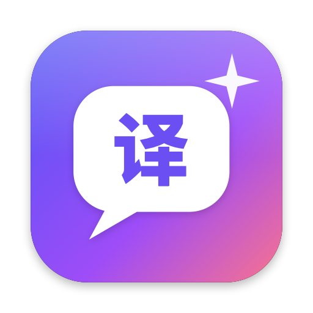

隐私政策
瞬译 · 生效日期 2026 年 11 月 2 日
一句话
瞬译没有账号、没有服务器、没有统计和广告。开发者收不到你翻译的任何内容，也收不到任何关于你的数据。
你翻译的文字去了哪
- 本机翻译：用 macOS 自带的翻译功能在你的 Mac 上完成，不经过网络。
- 截图里的字：用 macOS 自带的文字识别在本机完成，图片不会上传。
- AI 精译和详解：只有在你自己填写了 AI 接口地址和 API Key 之后才会启用。启用后，要翻译的文字会从你的 Mac 直接发送到你填写的那个接口，不经过开发者。那家服务商如何处理这些文字，以它的隐私政策为准。
- 问 AI：你按下问 AI 时，瞬译在浏览器里打开你选择的 AI 网站，并把问题填进网址或剪贴板。之后的对话发生在那个网站上，以它的隐私政策为准。
权限用来做什么
- 辅助功能：在你按下快捷键的那一刻模拟一次复制，拿到你选中的文字；你选择替换时模拟一次粘贴。瞬译不会记录你的键盘输入。
- 屏幕录制（可选）：只在你按下框选翻译的那一刻截取一帧画面，用来冻住屏幕和识别文字。截图只放在内存里，不会保存或上传。
- HyperVibe 配置文件夹（可选）：只有你在设置里亲手选中这个文件夹后，瞬译才会读写里面的遥控器按键配置。
存在你 Mac 上的东西
- 设置（包括你填的 AI 接口地址和 API Key），只存在瞬译自己的沙盒容器里。
- 最近 200 条翻译记录，用来在菜单栏里回看和加快重复翻译。可以在设置里随时清空。
这些数据不会离开你的 Mac。删除瞬译时，系统会一起清掉它的容器。
儿童隐私
瞬译不收集任何人的个人信息，包括未满 14 岁的儿童。
变更和联系
这份政策如有修改，会更新本页并改动生效日期。有疑问请在 GitHub Issues 留言。
English summary
Shunyi has no accounts, no servers, no analytics and no ads. The developer receives none of your text or data. On-device translation and text recognition never leave your Mac. AI translation is off until you enter your own OpenAI-compatible endpoint and API key; your text is then sent directly from your Mac to that endpoint, under that provider's privacy policy. “Ask AI” opens the AI website you choose in your browser. Accessibility is used only to copy your selection and paste translations when you press a shortcut; Screen Recording (optional) captures a single frame at that moment, kept in memory only. Settings, your API key and the last 200 translations stay in the app's sandbox container on your Mac and are removed when you delete the app. Questions: GitHub Issues.
Effective November 2, 2026.